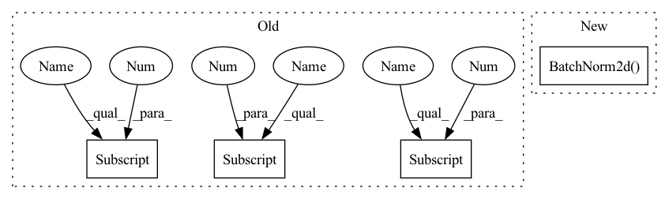

Pattern ID :585
Before Change
// Stage 0 (spatial size: 32x32)
self.layer1 = self._make_layer(block, nstages[0], nstages[1], n)
// Stage 1 (spatial size: 32x32)
self.layer2 = self._make_layer(block, nstages[1] , nstages[2], n, stride=2)
// Stage 2 (spatial size: 16x16)
self.layer3 = self._make_layer(block, nstages[2] , nstages[3], n, stride=2)
// Stage 3 (spatial size: 8x8)
self.bn = nn.BatchNorm2d(nstages[3] )
self.relu = nn.ReLU(inplace=True)
// classifier
self.avgpool = nn.AvgPool2d(8)After Change
super(ResNet_Cifar, self).__init__()
self.inplanes = 16
self.conv1 = nn.Conv2d(3, 16, kernel_size=3, stride=1, padding=1, bias=False)
self.bn1 = nn.BatchNorm2d( 16)
self.relu = nn.ReLU(inplace=True)
self.layer1 = self._make_layer(block, 16, layers[0])
self.layer2 = self._make_layer(block, 32, layers[1], stride=2)
self.layer3 = self._make_layer(block, 64, layers[2], stride=2)In pattern: SUPERPATTERN
Frequency: 3
Non-data size: 4
Instances Fragment ID: 2019871
Project Name: decile-team/cords
Commit Name: 798af04c991257c652c388af7a1fc4964c7f4f6a
Time: 2021-02-08
Author: krishnateja.killamsetty@utdallas.edu
File Name: cords/utils/models/resnet164.py
M Class Name: ResNet
N Class Name: ResNet_Cifar
M Method Name: __init__(4)
N Method Name: __init__(4)
M Parent Class: nn.Module
N Parent Class: nn.Module
M File Name: cords/utils/models/resnet164.py
N File Name: cords/utils/models/resnet164.py
M Start Line: 62
M End Line: 85
N Start Line: 163
N End Line: 182
Before Change
assert (depth - 2) % 9 == 0 // 164 or 1001
super(ResNet, self).__init__()
n = (depth - 2) / 9
nstages = [16, 64, 128, 256]
// one conv at the beginning (spatial size: 32x32)
self.conv1 = nn.Conv2d(3, nstages[0] , kernel_size=3, stride=1,
padding=1, bias=False)
// use `block` as unit to construct res-net
// Stage 0 (spatial size: 32x32)
self.layer1 = self._make_layer(block, nstages[0], nstages[1], n)
// Stage 1 (spatial size: 32x32)
self.layer2 = self._make_layer(block, nstages[1] , nstages[2], n, stride=2)
// Stage 2 (spatial size: 16x16)
self.layer3 = self._make_layer(block, nstages[2], nstages[3], n, stride=2)
// Stage 3 (spatial size: 8x8)
self.bn = nn.BatchNorm2d(nstages[3] )
self.relu = nn.ReLU(inplace=True)
// classifier
self.avgpool = nn.AvgPool2d(8)After Change
super(ResNet_Cifar, self).__init__()
self.inplanes = 16
self.conv1 = nn.Conv2d(3, 16, kernel_size=3, stride=1, padding=1, bias=False)
self.bn1 = nn.BatchNorm2d( 16)
self.relu = nn.ReLU(inplace=True)
self.layer1 = self._make_layer(block, 16, layers[0])
self.layer2 = self._make_layer(block, 32, layers[1], stride=2)
self.layer3 = self._make_layer(block, 64, layers[2], stride=2) Fragment ID: 2019868
Project Name: decile-team/cords
Commit Name: 798af04c991257c652c388af7a1fc4964c7f4f6a
Time: 2021-02-08
Author: krishnateja.killamsetty@utdallas.edu
File Name: cords/utils/models/resnet164.py
M Class Name: ResNet
N Class Name: ResNet_Cifar
M Method Name: __init__(4)
N Method Name: __init__(4)
M Parent Class: nn.Module
N Parent Class: nn.Module
M File Name: cords/utils/models/resnet164.py
N File Name: cords/utils/models/resnet164.py
M Start Line: 62
M End Line: 85
N Start Line: 163
N End Line: 182
Before Change
self.p2_1 = nn.Conv2d(in_c, c2[0], kernel_size=1)
self.p2_2 = nn.Conv2d(c2[0], c2[1], kernel_size=3, padding=1)
// 线路3，1 x 1卷积层后接5 x 5卷积层
self.p3_1 = nn.Conv2d(in_c, c3[0] , kernel_size=1)
self.p3_2 = nn.Conv2d(c3[0] , c3[1] , kernel_size=5, padding=2)
// 线路4，3 x 3最大池化层后接1 x 1卷积层
self.p4_1 = nn.MaxPool2d(kernel_size=3, stride=1, padding=1)
self.p4_2 = nn.Conv2d(in_c, c4, kernel_size=1)After Change
// 1x1 conv -> 3x3 conv branch
self.b2 = nn.Sequential(
nn.Conv2d(in_planes, n3x3red, kernel_size=1),
nn.BatchNorm2d( n3x3red) ,
nn.ReLU(True),
nn.Conv2d(n3x3red, n3x3, kernel_size=3, padding=1),
nn.BatchNorm2d(n3x3), Fragment ID: 2019866
Project Name: datawhalechina/dive-into-cv-pytorch
Commit Name: d7e5c8335c2babf3ca45d2327bc74c2194b0dc59
Time: 2020-05-21
Author: qiangzibro@gmail.com
File Name: beginner/chapter02_image_classification_introduction/2.2_introduction_of_image_classification/2.2.2_classical_cnn_models/GoogLeNet/GoogLeNet.py
M Class Name: Inception
N Class Name: Inception
M Method Name: __init__(8)
N Method Name: __init__(6)
M Parent Class: nn.Module
N Parent Class: nn.Module
M File Name: beginner/chapter02_image_classification_introduction/2.2_introduction_of_image_classification/2.2.2_classical_cnn_models/GoogLeNet/GoogLeNet.py
N File Name: beginner/chapter02_image_classification_introduction/2.2_introduction_of_image_classification/2.2.2_classical_cnn_models/GoogLeNet/GoogLeNet.py
M Start Line: 35
M End Line: 44
N Start Line: 17
N End Line: 56
Before Change
super(ResNet50M, self).__init__()
self.loss = loss
resnet50 = torchvision.models.resnet50(pretrained=True)
base = nn.Sequential(*list(resnet50.children())[:-2])
self.layers1 = nn.Sequential(base[0], base[1], base[2])
self.layers2 = nn.Sequential(base[3], base[4])
self.layers3 = base[5]
self.layers4 = base[6]
self.layers5a = base[7] [0]
self.layers5b = base[7][1]
self.layers5c = base[7] [2]
self.fc_fuse = nn.Sequential(nn.Linear(4096, 1024), nn.BatchNorm1d(1024), nn.ReLU())
self.classifier = nn.Linear(3072, num_classes)
self.feat_dim = 3072 // feature dimensionAfter Change
// backbone network
self.conv1 = nn.Conv2d(3, 64, kernel_size=7, stride=2, padding=3, bias=False)
self.bn1 = nn.BatchNorm2d( 64)
self.relu = nn.ReLU(inplace=True)
self.maxpool = nn.MaxPool2d(kernel_size=3, stride=2, padding=1)
self.layer1 = self._make_layer(block, 64, layers[0])
self.layer2 = self._make_layer(block, 128, layers[1], stride=2) Fragment ID: 2019849
Project Name: vlsomers/bpbreid
Commit Name: 710b9ac1a28d418bddc41aeeda320ab4de4d17fe
Time: 2018-10-26
Author: k.zhou@qmul.ac.uk
File Name: torchreid/models/resnet.py
M Class Name: ResNet50M
N Class Name: ResNet
M Method Name: __init__(7)
N Method Name: __init__(3)
M Parent Class: nn.Module
N Parent Class: nn.Module
M File Name: torchreid/models/resnet.py
N File Name: torchreid/models/resnet.py
M Start Line: 71
M End Line: 84
N Start Line: 107
N End Line: 130